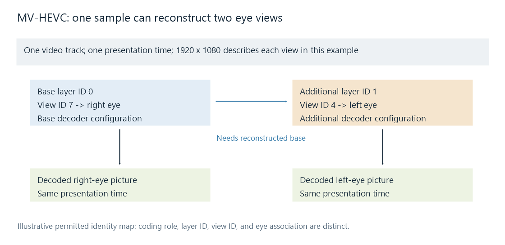
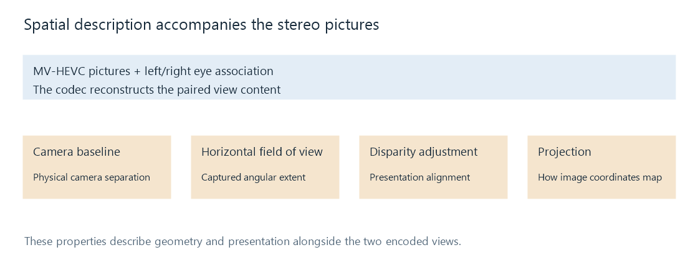

MV-HEVC and Spatial Video
MV-HEVC represents related views in HEVC layers, while a spatial video profile adds the geometry and presentation information needed to interpret a stereo pair.
An inspection report can show one HEVC video track, 1920 × 1080, while a supporting reader reconstructs two 1920 × 1080 eye pictures from each presentation sample. The source is not necessarily a side-by-side rectangle: Multiview HEVC, or MV-HEVC, can place the related views in codec layers within the same track.
The codec reconstructs those viewpoints. A spatial-video description also supplies information about capture geometry and presentation. Reading a complete file therefore involves its layers, eye association, timing, and applicable movie-profile metadata.
From layer data to a pair of pictures
MV-HEVC uses the multilayer and multiview tools of HEVC. A compatible base view can be coded using ordinary HEVC tools. The additional view uses multiview coding, including permitted prediction from another reconstructed view.
Apple's published HEVC Stereo Video Interoperability Profile v0.9 beta describes a focused two-view carriage in one MPEG-4 or QuickTime video track. Its base view is Main or Main10, and the corresponding additional view uses Multiview Main or Multiview Main10. Both have matching sample dimensions and precision in that profile.
The profile's sample entry uses hvc1, with hvcC supplying the primary decoder configuration and lhvC the additional-layer configuration. Each media sample contains the two view components for the same presentation instant. The track's 1920 × 1080 description in our example applies to a view; it does not mean the two pictures have been reduced to 960-pixel-wide halves.

The arrow denotes a prediction dependency on the reconstructed base. The numerical IDs are a permitted illustrative mapping, not a claim that every file uses them.
The base view can be the right eye
The base layer has layer ID 0. That coding role is independent of whether its picture belongs to the left or right eye. The published interoperability profile allows either eye to be primary.
In the illustration, the stream describes:
| Coding role | Layer ID | View ID | Eye assignment |
|---|---|---|---|
| Base | 0 | 7 | Right |
| Additional | 1 | 4 | Left |
The Video Parameter Set establishes the connection from layers to view identities; stereo reference-display information identifies which view is for each eye. The reader follows that connection. Replacing it with the assumption “layer zero means left” would swap this example's presentation.
Apple's conversion sample chooses the simpler IDs 0 and 1 with left first. Its layer-ID list, view-ID list, and left/right association list are separate configuration properties even when their chosen numbers happen to match.
Requesting and returning the required views
A decoder interface may require the caller to request the multiview layer set. A path that requests or exposes only the compatible base can produce a normal single-view image; a stereo path needs both requested views and their dependencies.
Apple's multiview-reading workflow returns related image buffers with tags identifying their layer and stereo-eye roles. The application can then route the left-tagged picture to the left eye and the right-tagged picture to the right. Array position or the smallest numeric ID should not substitute for that role.
The two buffers share the intended presentation time. Their decode work can depend on reference state and other reconstructed views, but they belong to one stereo instant. Pairing buffers from different instants would introduce the motion-related disparity error described in the stereoscopic walkthrough.
Two full decoded pictures also imply two picture buffers at that instant. For an unpadded 10-bit 4:2:0 representation stored as P010, two 1920 × 1080 views contain 2 × 6,220,800 = 12,441,600 active sample bytes. Alignment, hardware layout, and reference history can add storage. This arithmetic describes decoded samples, not the compressed file size.
Geometry metadata completes the spatial description

Apple's Movie Profiles v0.9 beta, published in June 2025, distinguishes stereo 3D delivery from its Spatial Video Profile. The latter adds a specific geometry and presentation description to the MV-HEVC stereo track.
| Property | Meaning for the representation |
|---|---|
| Camera baseline | Separation between the camera optical centers |
| Horizontal field of view | Angular extent represented by the captured image |
| Disparity adjustment | An alignment adjustment for the stereoscopic presentation |
| Projection | Mapping from image coordinates to the intended viewing geometry |
| Optional hero-eye preference | A preferred view for an applicable single-view presentation |
In that published profile, the Video Extended Usage description contains eye, camera, and presentation information, and the sample entry carries horizontal field-of-view information. The linked specification identifies the required boxes and constraints for that version.
Baseline and field of view describe different aspects of capture. The former affects the viewpoints' separation; the latter affects how image position relates to angle. Disparity adjustment changes presentation alignment. The capture and display calculations show why those roles should not be combined into a single generic “depth” value.
A hero-eye preference likewise describes presentation. It does not change the codec's dependency structure or turn an additional predicted layer into an independently coded base.
Converting a packed source
For a full side-by-side source of 3840 × 1080, splitting its columns supplies two 1920 × 1080 pictures. A converter assigns their eye roles, encodes the MV-HEVC view layers, and writes the matching track description. That changes both the spatial arrangement and the coding of the pictures.
A half-SBS source instead supplies two 960 × 1080 regions whose intended view shape needs to be restored or described correctly. Expanding them into a 1920-column grid creates reconstructed samples; the new codec still starts from the detail retained in those narrower source regions.
Spatial capture metadata should describe the source's real geometry. Writing an arbitrary baseline or field-of-view value does not establish that the original pictures were captured using those values. A conversion with known camera information can preserve or transform that description consistently with its image operations.
The movie profile and the output route
The linked Apple profiles describe particular interoperability targets. MV-HEVC as a codec representation is broader than one movie profile, and its use does not by itself specify SDR, HDR, or an immersive projection. Dolby Vision Profile 20 adds its own color and metadata requirements to supported forms of multiview delivery.
For an Emby investigation, record the actual source layers and eye description, what the selected playback or conversion path delivered, and which views the app reconstructed. Then examine the final presentation's stereo and spatial interpretation. A remux preserving coded views and a conversion selecting the base eye can create different outcomes from the same source.
See Also
- H.265 / HEVC Video
- Multiview Video Coding (MVC)
- How Stereoscopic Video Works
- MP4 and the ISO Base Media File Format
- Side-by-Side 3D Video
- Dolby Vision Profile 20
References
- ITU-T H.265: HEVC, including multilayer and multiview extensions
- Apple HEVC Stereo Video Interoperability Profile: v0.9 beta, June 2023
- Apple Movie Profiles for Spatial and Immersive Media: v0.9 beta, June 2025
- Apple: Converting stereo views to MV-HEVC and spatial video
- Apple: Reading multiview 3D video